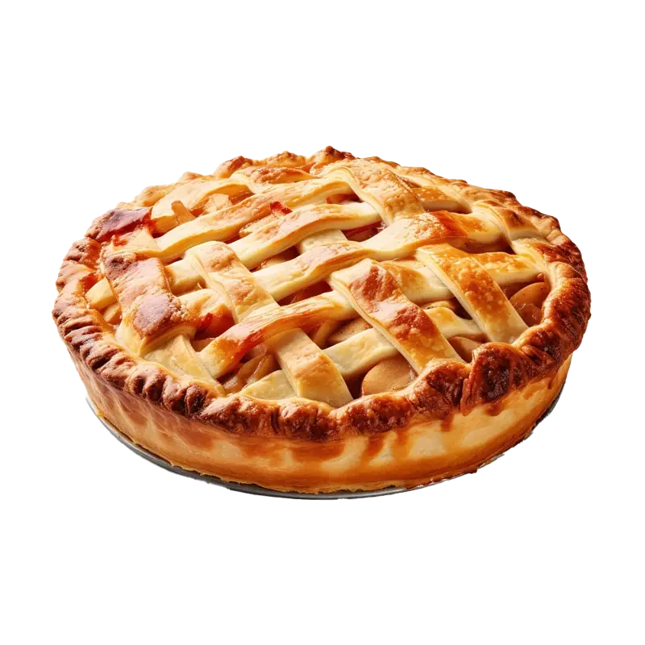

Pie
Pie is a beloved dessert that comes in countless flavors and styles. Discover how to choose or make pies with healthier ingredients, learn about the nutritional aspects of different types of pies, and find storage tips to keep pie fresh, whether it's fruit-filled or creamy.
Health benefits
Learn how pie, especially when made with wholesome ingredients like fruits and whole grains, can be an occasional treat that fits into a balanced lifestyle, promoting enjoyment and well-being.
- Provides energy from carbohydrates, fats, and sugars, making it a quick source of fuel.
- Can be a source of essential nutrients if made with nutrient-dense ingredients like fruits, nuts, and whole grains, providing vitamins, minerals, and fiber.
- Offers versatility in ingredients, allowing for the inclusion of various healthy components such as fruits (for vitamins and fiber) and nuts (for healthy fats and protein).
- Enhances mood and satisfaction as an occasional treat, contributing to emotional well-being and enjoyment.